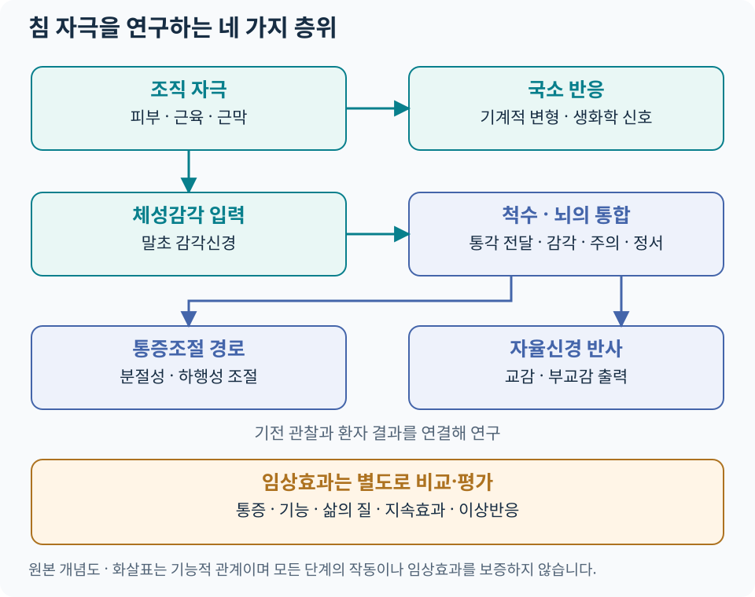

침의 과학적 접근¶
침 치료를 현대 생의학적으로 이해하려면 어떤 조직에 어떤 자극이 전달되는지, 신경계에서 무엇이 변하는지, 환자의 통증과 기능이 얼마나 좋아지는지를 차례로 살펴봅니다. 경혈·경락과 동씨기혈은 치료 위치를 찾는 체계이며, 같은 부위를 근육·근막·피부감각신경·척수분절이라는 해부학적 관점에서도 읽을 수 있습니다.
이 파트는 말초조직, 척수 통증조절, 뇌 네트워크, 자율신경 반사의 네 축을 다룹니다. 기전 연구는 작용 경로를 탐색하고, 임상시험은 특정 환자군에서 치료의 이득과 위해를 비교합니다. 두 질문을 함께 읽으면 연구 결과를 진료에 연결하기 쉬워집니다.
핵심 흐름¶

{kind=link}
피부·근육·결합조직에서 시작한 자극은 체성감각 입력으로 전달되고, 국소 반응과 척수·뇌의 조절에 관여할 수 있습니다. 자율신경 반사도 이 입력과 연결되는 연구 경로입니다. 각 경로는 서로 영향을 주며, 모든 단계를 반드시 순서대로 거쳐야 하는 하나의 사슬은 아닙니다. 도해는 본문을 바탕으로 직접 제작한 개념도이며 실제 신경의 위치나 자침 경로를 표시한 해부도는 아닙니다.
주요 지식망¶
| 궁금한 질문 | 읽을 문서 | 핵심 내용 |
|---|---|---|
| 침이 피부·근육·근막에서 어떻게 감지되나요? | 말초신경과 침 자극 | 조직층, Aβ·Aδ·C 섬유, 기계적 신호변환, 아데노신 |
| 아픈 곳에서 떨어진 자극을 어떻게 연구하나요? | 침과 통증조절 신경생리 | 척수분절, 상행·하행 조절, 내인성 오피오이드, 감작 |
| 뇌영상에서 색이 바뀌면 무엇을 뜻하나요? | 침과 뇌·중추신경계 | BOLD·기능적 연결성, 감각지도, 연구 대조군 |
| HRV와 미주신경 연구는 어떻게 다른가요? | 침과 자율신경계 | 체성–자율신경 반사, 생쥐 회로 실험, 사람의 기능 평가 |
| 전침의 주파수와 강도는 무엇을 바꾸나요? | 전침 자극 파라미터 | 주파수·강도·펄스폭·연결 부위·시간 |
| 실제 효과는 어디서 확인하나요? | 침 연구·임상근거 | 질환별 비교군, 통증·기능, 효과 크기와 지속기간 |
현대 연구에서 반복되는 주요 축¶
| 연구 층위 | 대표적인 관찰·실험 | 현재 읽을 수 있는 의미 |
|---|---|---|
| 국소조직 | 사람의 침 회전·인출력 실험, 국소 아데노신 측정 | 물리적 자극과 생화학적 변화가 실제로 측정됨 |
| 말초·척수 | 신경활동 기록, 수용체 차단·유전자 조작 동물실험 | 특정 실험 조건에서 신경·수용체가 반응에 기여하는지 검증 |
| 뇌 네트워크 | 사람의 치료 전후 fMRI와 신경전도·증상 평가 | 감각처리 변화와 임상 변화의 관계를 탐색 |
| 자율신경 | 동물의 회로 추적, 사람의 HRV·혈압·장기 기능 측정 | 회로의 인과 검증과 임상 지표의 관찰을 구분 |
대표 원저는 Langevin 등, 2001, Takano 등, 2012, Maeda 등, 2017, Liu 등, 2021입니다. 각 연구의 대상·결과·적용 범위는 해당 세부 문서에서 설명합니다.
기전에서 임상효과로 연결할 때¶
논문을 읽을 때 대상 → 자극 → 비교군 → 평가값 → 추적기간을 확인합니다. 예를 들어 건강인의 생화학적 변화, 통증 동물의 회피반응 감소, 만성통증 환자의 일상기능 개선은 서로 다른 결과입니다. 같은 용어로 모두 ‘치료 성공’이라고 묶기보다, 연구가 직접 측정한 결과를 먼저 적습니다.
| 논문의 질문 | 적합한 근거 | 함께 확인할 항목 |
|---|---|---|
| 이 회로가 반응에 필요한가? | 차단·제거·활성화 실험 | 종, 모델, 자극 조건, 다른 경로의 영향 |
| 사람에서도 생리 변화가 있는가? | 생리·영상 연구 | 대조 조건, 측정 오차, 증상과의 관계 |
| 환자에게 도움이 되는가? | RCT·체계적 문헌고찰 | 비교군, 효과 크기·신뢰구간, 기능·위해·지속효과 |
| 어느 상황에 권고하는가? | 진료지침 | 질환·중증도, 대안 치료, 근거 확실성과 권고 강도 |
대조군에 따른 질문과 질환별 근거 카드는 근거·연구에서 이어집니다.
아카이브 연결¶
위치를 찾을 때는 361경혈 아틀라스와 동씨침법 부위별 아틀라스, 조직을 확인할 때는 근육·근막·MPS 아틀라스와 임상해부학을 함께 봅니다. 경혈·동씨기혈·통증유발점은 위치가 겹칠 수 있지만 각각의 정의와 선정 기준을 기록합니다.
저림·근력저하가 있으면 신경포착증후군을 감별하고, 조직층과 주변 구조는 근골격계 초음파로 연결합니다. 치료 계획은 안전·위험신호, 반복 치료의 판단은 경과·재평가를 참고합니다.
진료 기록에 연결하는 예¶
다음은 기록 구조의 예시이며 실제 환자의 치료 결과가 아닙니다.
| 기록 항목 | 어깨 통증에서 적을 내용의 예 |
|---|---|
| 치료 전 질문 | 어떤 동작에서 아픈가, 목에서 오는 증상이나 신경학적 이상이 있는가 |
| 위치와 조직 | 선택한 경혈·압통 부위, 관련 근육·근막, 주변 신경·혈관 |
| 자극 | 수기침·전침 여부, 자극 설정과 환자 반응 |
| 결과 | 팔 올리기·옷 입기·수면 등 미리 정한 기능과 통증의 변화 |
| 다음 판단 | 개선의 지속기간, 이상반응, 운동·부하 조절, 추가 평가 필요성 |
과학적 설명의 역할은 이 기록에서 자극과 관찰 결과 사이의 질문을 구체화하는 것입니다. 치료 효과의 최종 판단에는 환자가 체감하는 변화와 기능 회복을 함께 반영합니다.